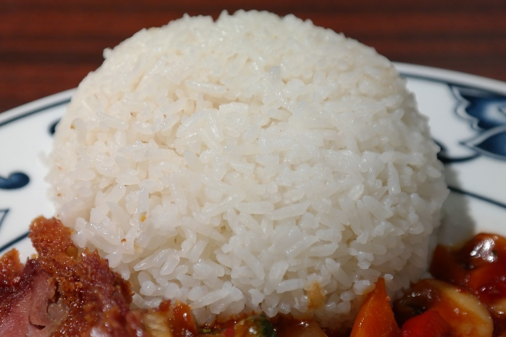

Home
Chicken Ginger Rice

Description
Ingredients
- 2 cups jasmine rice
- 2 1/2 cups chicken stock
- 3 slices fresh ginger
Steps
- Wash the rice to remove excess starch
-
Place the rice into a saucepan, adding the chicken stock and nestling
the ginger into the rice. Heat on high heat until the stock simmers,
then reduce to medium heat and cook till rice grains begin to rise above
the stock.
-
Cover with lid that has a gap to let some steam escape, cook for 5
minutes.
-
Confirm rice has absorbed all the chicken stock, then let the pot rest
for 10 minutes.
- Fluff rice using fork and remove ginger.
- Serve!